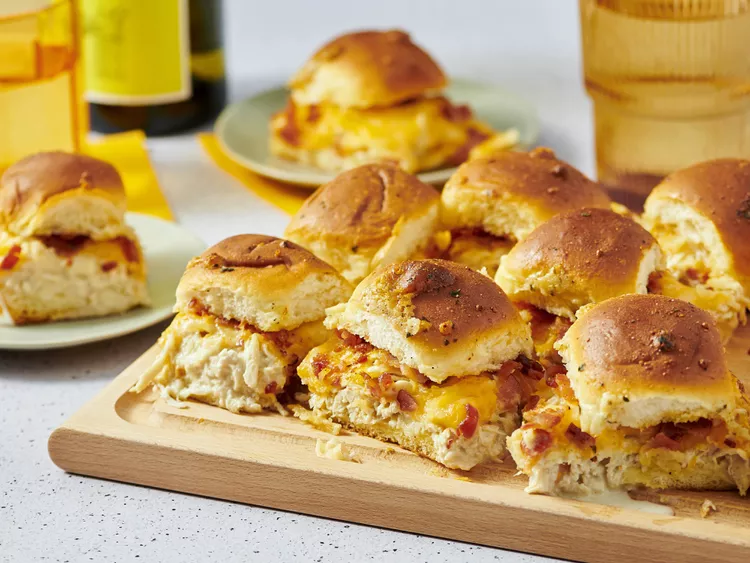

Home
Chicken Bacon Ranch Sliders

Description
These chicken bacon ranch sliders are a perfect finger food for game day.
The cooked chicken is flavored with ranch dressing and the top of the sliders are seasoned with ranch butter for a tasty appetizer that requires minimal prep.
Ingredients
- 8 strips of bacon
- 12 Hawaiian dinner rolls
- 1 pound shredded cooked chicken
- 1/2 cup prepared ranch dressing
- 8 ounces of shredded colby-jack cheese
- 1/4 cup butter
- 2 teaspoons of ranch seasoning
Steps
- preheat oven to 350 degrees F
- place bacon in large skillet, cook over medium-high heat for 10 minutes (or unitl evenly brown)
- drain bacon slices on paper towels
- when cool enough to handle, crumble bacon
- with serrated knife, cut slider rolls in half horizontally
- place bottom halves of rolls onto rimmed baking tray
- add chicken and prepared ranch dressing to a bowl; stir to throughly to coat chicken
- spread chicken onto slider rolls
- top chicken mixture with cheese and crumbled bacon
- place top halves on top of filling
- melt butter in a bowl with microwave on high for 30 seconds
- stir ranch seasoning into butter
- with pastry brush, brush tops of sliders with ranch butter -- cover rolls with foil
- bake into preheated oven for 20 minutes
- remove foil and bake for about 10 minutes until cheese is melted